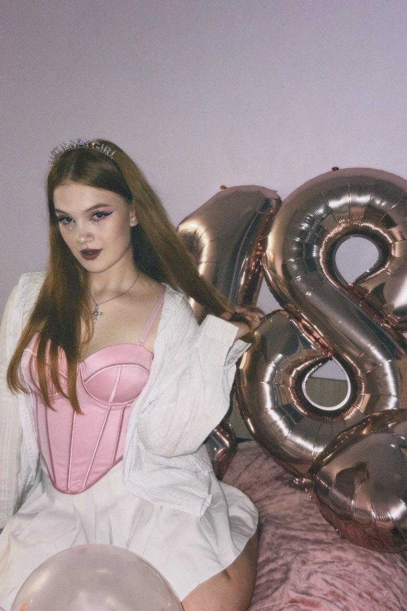

Photo Gallery


Мой мир, мои правила, моя эстетика.

Привет! Я рада, что ты здесь.
«Студентка 1-го курса стоматологического факультета. Совмещаю академическую учебу с развитием мануальных навыков: многолетнее увлечение вышиванием приучило меня к ювелирной точности и усидчивости, что считаю фундаментом для будущей работы в стоматологии. Обладаю развитым чувством гармонии и композиции благодаря любви к эстетической фотографии. Спорт научил меня дисциплине и выносливости, а музыка помогает сохранять творческий тонус и насмотренность. Стремлюсь к тому, чтобы каждый результат моей работы был не только функциональным, но и эстетически совершенным».
Связаться со мнойНервы - Вороны